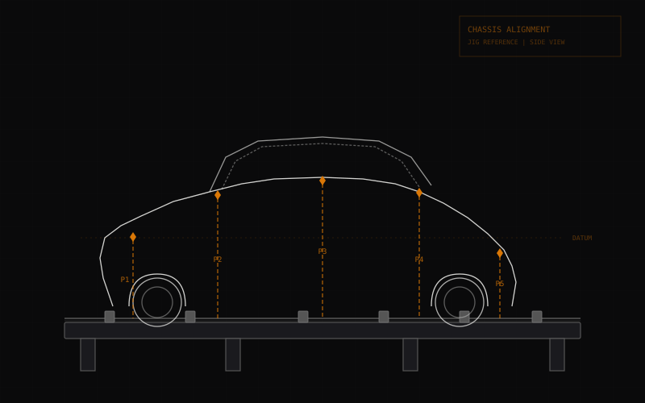
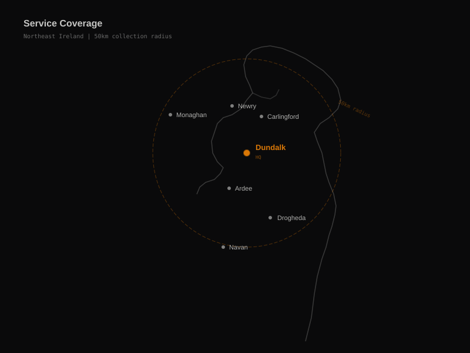

Car frame straightening.
The last stop before write-off.
There are very few proper chassis jig shops in Ireland. Most crash repair garages do not have the equipment, the space, or the experience to straighten a bent chassis back to factory spec. We do. Based in Dundalk, serving the whole island — trade and retail.

The shortage of chassis specialists in Ireland
Frame straightening is one of the most specialised jobs in collision repair, and one of the least available. A proper chassis jig takes up serious floor space, costs tens of thousands to buy, and requires specific training and experience to operate. The result is that most crash repair shops in Ireland simply do not offer the service. They patch what they can, send the rest to be written off, and move on to the next job.
The shops that do have jig equipment tend to be concentrated in Dublin and Cork, with a handful scattered across regional centres. If you are in the Northeast, the Midlands, or the border counties, your options are thin. Dealers and insurers may tell you the car is beyond repair — but in many cases the real problem is that the nearest jig shop is too far away, or too busy, to quote on your car in any reasonable timeframe.
That is the gap we fill. We are one of the few dedicated chassis jig specialists in the Northeast, based in Dundalk, Co. Louth, and equipped to handle structural frame repair for cars from across Ireland.
Why we take jobs from further than most
Our standard collection radius is 50km from Dundalk — that covers Drogheda, Ardee, Newry, Monaghan and most of Louth and the border area. But for serious structural frame straightening work, we regularly take jobs from further afield. Cavan, Meath, North Dublin, the Midlands, and across the border into Down and Armagh — if the job warrants the travel, we will quote on it. Collection by flatbed can be arranged for cars that cannot be driven. Contact us with photos and details and we will give you a straight answer on whether we can help and what it will cost.
What we can save
Insurance companies write cars off on economics, not on engineering. A car can be structurally sound after repair but still declared a write-off because the cost of fixing it through the insurer's approved repairer — at full labour rates, with new OEM parts, and a full respray — exceeds a threshold. That does not mean the car is scrap.
We specialise in the structural side of these repairs. If the chassis can be brought back within manufacturer tolerance on our jig, the car is safe. We do the metalwork and hand it back ready for paint. You choose your own sprayer, keep the costs separate, and save the car.
This approach is particularly valuable for classic cars, low-mileage vehicles, and cars with sentimental value that an insurer would not factor into a write-off decision. If the owner wants to save it, and the structure can be made right, we will do the work.
Equipment
We use a dedicated chassis jig bench — the car is mounted to the bench at known factory reference points, and every measurement is taken against the manufacturer's original specification. Hydraulic pull rams apply controlled force to bring bent sections back into alignment. The measuring system confirms the result before the car leaves the bench. No guesswork, no eyeballing — documented, repeatable, factory-spec correction.
This is not something that can be done with a chain and a tree. Proper frame straightening requires proper equipment, and we have invested in it because it is the core of what we do.
Collection and transport
Cars that need frame straightening usually cannot be driven. We arrange flatbed recovery and collection as part of the job. Within our standard 50km radius — covering Dundalk, Drogheda, Ardee, Newry, Carlingford, Monaghan and surrounding areas — collection is included. For longer distances we will quote transport separately, upfront, with no hidden costs. If you are in Dublin, Cavan, Meath, or further afield, contact us first and we will work out the most practical route to get your car on our bench.
Where we cover for frame straightening
We are based in Dundalk, Co. Louth. For chassis and frame straightening work, we serve a wider area than our standard panel beating radius. Counties we regularly take work from:
Further afield on request. If you are outside these areas, get in touch — if the job is structural and worth the trip, we will find a way to make it work.

Frame straightening FAQ
Do you cover Dublin, Cavan, Monaghan and other counties?
Yes. We are based in Dundalk, Co. Louth, and our standard collection radius is 50km. For serious structural and frame straightening work we regularly take jobs from further afield — Cavan, Monaghan, North Dublin, Meath, and the border counties. Contact us with details and we will quote on collection and repair.
Can you collect my car if it can't be driven?
Yes. We arrange flatbed collection for cars that are not roadworthy. Within our standard 50km radius collection is included. For further distances we will quote a transport cost upfront — no surprises.
Can you work on an insurance write-off I've bought back?
Yes, we regularly do this. Many insurance write-offs are structurally repairable — the insurer wrote it off because full-service repair was not economical, not because the car is beyond saving. We will inspect the chassis, give you an honest assessment, and quote on the structural work needed to bring it back within manufacturer tolerance.
Straighten it. Don't bin it.
WhatsApp a photo of the damage and we'll quote within 2 hours. Or call us direct. No obligation, no pressure.
086 066 6591 · {{EMAIL}}
{{STREET_ADDRESS}}, Dundalk, Co. Louth, {{EIRCODE}}
Mon–Sat 8:00–18:00 · Sun closed